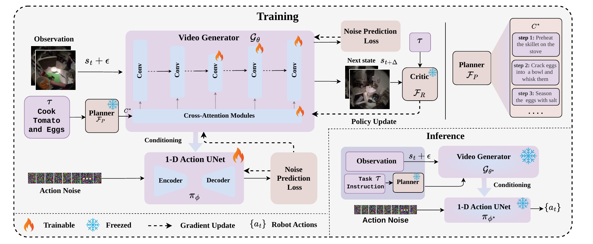
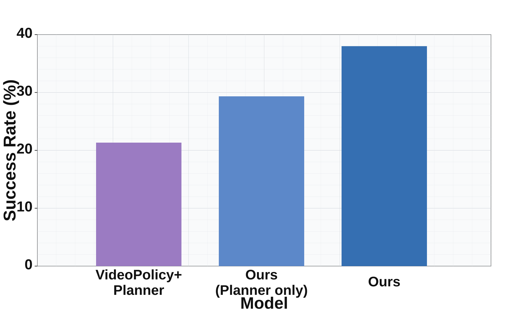
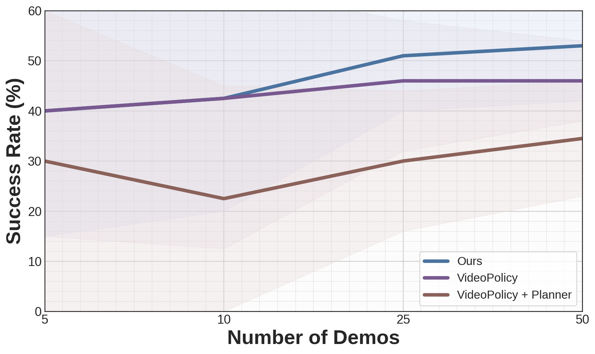

Pretrained video generative models are promising backbones for visuomotor control, but their imagined futures often drift from task intent and are not reliably action-conditional. RoboTALES learns task-aligned simulated futures for robot policy learning by combining three signals: a hierarchical LLM planner that decomposes instructions into subgoals, a frozen vision-language critic that scores imagined rollouts, and a single-stage training objective that jointly optimizes the video generator and action diffusion policy.
By aligning imagination with both language-level reasoning and action-level feedback, RoboTALES improves long-horizon manipulation on RoboCasa and LIBERO-10, achieving strong performance with only 50 demonstrations per task.
RoboTALES couples a hierarchical planner, Stable Video Diffusion world model, frozen VLM reward critic, and action diffusion policy. The planner provides subgoal-conditioned task structure, the video generator imagines short-horizon futures, the critic rewards task-aligned predictions, and the action policy converts video-model features into executable controls.

RoboTALES produces task-aligned rollouts across pick-and-place, appliance, drawer, and coffee-making tasks in RoboCasa.
RoboTALES improves long-horizon robot manipulation by aligning future prediction with task reasoning and control.


Trained RoboCasa and LIBERO10 checkpoints are available on Hugging Face.
@inproceedings{gani2026robotales,
title={RoboTALES: Learning Reasoning-Guided Robot Policies via Task-Aligned Simulated Futures},
author={Gani, Hanan and Kulkarni, Tejal and Chodavarapu, Madhoolika and Hansen, Nicklas and Chandraker, Manmohan},
booktitle={European Conference on Computer Vision (ECCV)},
year={2026}
}